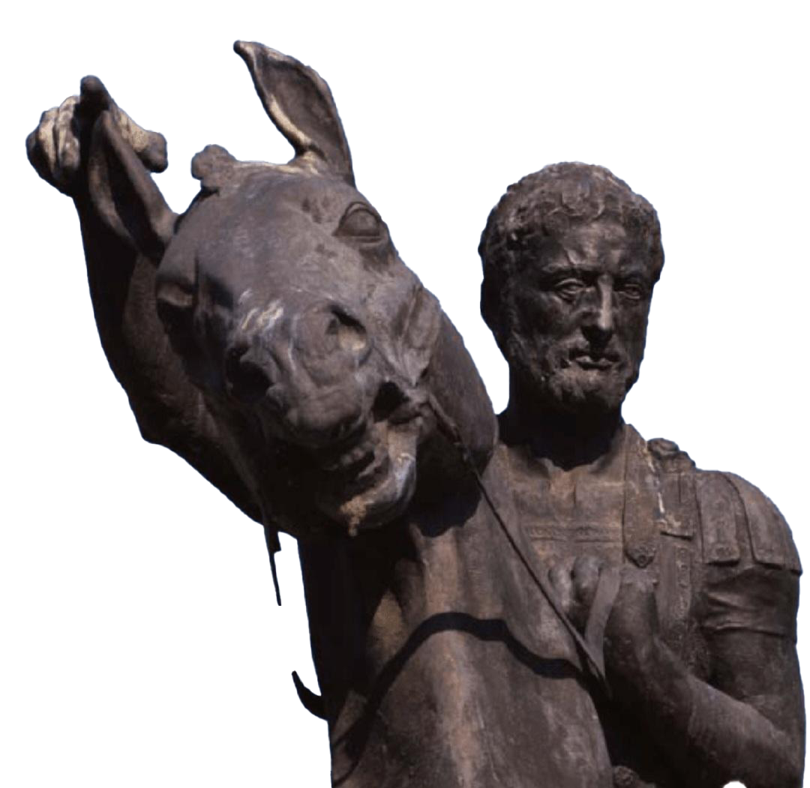

Metoda "Divide et Empera"
de Slutu Stanislav

de Slutu Stanislav
Expresia este atribuită lui Filip al II-lea, rege al Macedoniei (382-336 î.Hr.), descriind politica sa împotriva orașelor-state grecești. Această strategie necesită multă îndemânare și finețe politică, de asemenea o bună înțelegere a științei politice, istoriei, psihologiei.

Concept: Este o tehnică de programare bazată pe descompunerea unei probleme complexe în subprobleme mai simple, rezolvarea acestora și combinarea rezultatelor. Cei 3 pași principali: Divide (Împarte): Problema inițială este împărțită în două sau mai multe subprobleme din același pachet (de același tip). Impera (Stăpânește / Rezolvă): Se rezolvă recursiv subproblemele. Dacă s-a ajuns la o dimensiune destul de mică (cazul de bază), se rezolvă direct. Combină: Se unesc soluțiile subproblemelor pentru a obține rezultatul final al problemei mari.
int cautareBinara(int arr[], int stanga, int dreapta, int x) {
if (dreapta >= stanga) {
int mijloc = stanga + (dreapta - stanga) / 2;
// Elementul a fost găsit la mijloc
if (arr[mijloc] == x) return mijloc;
// Dacă elementul este mai mic, căutăm în stânga
if (arr[mijloc] > x)
return cautareBinara(arr, stanga, mijloc - 1, x);
// Altfel, căutăm în dreapta
return cautareBinara(arr, mijloc + 1, dreapta, x);
}
return -1; // Elementul nu există
}
Algoritmul Merge Sort (Sortare prin interclasare): Împarte vectorul în jumătăți, le sortează recursiv și apoi le interclasează ordonat. Algoritmul Quick Sort (Sortare rapidă): Alege un pivot și împarte vectorul în funcție de elementele mai mici sau mai mari decât el. Turnurile din Hanoi: Rezolvarea jocului prin mutarea recursivă a sub-turnurilor de discuri.
✔ Avantaje:
✖ Dezavantaje:
#include <iostream>
using namespace std;
// Funcția recursivă care implementează Divide et Impera
// n = numărul de discuri
// sursa = tija de pe care plecăm ('A')
// destinatie = tija pe care vrem să ajungem ('B')
// auxiliar = tija folosită drept suport ('C')
void hanoi(int n, char sursa, char destinatie, char auxiliar) {
// Cazul de bază: dacă mai avem doar un disc, îl mutăm direct
if (n == 1) {
cout << "Muta discul 1 de pe tija " << sursa << " pe tija " << destinatie << "\n";
return;
}
// Pasul 1: Mută n-1 discuri de pe Sursă pe Auxiliar
hanoi(n - 1, sursa, auxiliar, destinatie);
// Pasul 2: Mută discul de bază (cel mai mare) pe Destinație
cout << "Muta discul " << n << " de pe tija " << sursa << " pe tija " << destinatie << "\n";
// Pasul 3: Mută cele n-1 discuri de pe Auxiliar pe Destinație
hanoi(n - 1, auxiliar, destinatie, sursa);
}
int main() {
int n;
cout << "Introduceti numarul de discuri: ";
cin >> n;
cout << "Pasi de urmat pentru " << n << " discuri:\n";
// Apelăm funcția cu tijele notate ca caractere: 'A', 'B', 'C'
hanoi(n, 'A', 'B', 'C');
return 0;
}#include <iostream>
#include
using namespace std;
// Funcția care combină (interclasează) cele două jumătăți sortate
void merge(int arr[], int stanga, int mijloc, int dreapta) {
int n1 = mijloc - stanga + 1;
int n2 = dreapta - mijloc;
// Creăm vectori temporari (alocați static sau dinamic)
int L[n1], R[n2];
// Copiem datele în vectorii temporari L[] și R[]
for (int i = 0; i < n1; i++)
L[i] = arr[stanga + i];
for (int j = 0; j < n2; j++)
R[j] = arr[mijloc + 1 + j];
// Interclasăm vectorii temporari înapoi în arr[stanga..dreapta]
int i = 0; // Indicele inițial pentru primul subtablou
int j = 0; // Indicele inițial pentru al doilea subtablou
int k = stanga; // Indicele inițial pentru tabloul combinat
while (i < n1 && j < n2) {
if (L[i] <= R[j]) {
arr[k] = L[i];
i++;
} else {
arr[k] = R[j];
j++;
}
k++;
}
// Copiem elementele rămase din L[], dacă mai sunt
while (i < n1) {
arr[k] = L[i];
i++;
k++;
}
// Copiem elementele rămase din R[], dacă mai sunt
while (j < n2) {
arr[k] = R[j];
j++;
k++;
}
}
// Funcția principală de Merge Sort
void mergeSort(int arr[], int stanga, int dreapta) {
if (stanga < dreapta) {
// Calculăm mijlocul ferit de overflow
int mijloc = stanga + (dreapta - stanga) / 2;
// Împărțim și sortăm recursiv cele două jumătăți
mergeSort(arr, stanga, mijloc);
mergeSort(arr, mijloc + 1, dreapta);
// Combinăm rezultatele
merge(arr, stanga, mijloc, dreapta);
}
}
// Funcție ajutătoare pentru afișare
void afisareVector(int arr[], int dimensiune) {
for (int i = 0; i < dimensiune; i++) {
cout << arr[i] << " ";
}
cout << "\n";
}
int main() {
int v[] = {38, 27, 43, 3, 9, 82, 10};
int n = sizeof(v) / sizeof(v[0]); // Calculăm numărul de elemente din vector
cout << "Vectorul inițial: ";
afisareVector(v, n);
// Apelăm sortarea: de la indexul 0 până la n - 1
mergeSort(v, 0, n - 1);
cout << "Vectorul sortat: ";
afisareVector(v, n);
return 0;
} #include <iostream>
#include
using namespace std;
// Funcție care schimbă două elemente între ele
void interschimba(int &a, int &b) {
int aux = a;
a = b;
b = aux;
}
// Algoritmul Divide et Impera pentru inversare
void inverseaza(int arr[], int stanga, int dreapta) {
// Cazul de bază: dacă am ajuns la un singur element sau interval invalid, ne oprim
if (stanga >= dreapta) {
return;
}
// 1. Divide: Calculăm mijlocul
int mijloc = stanga + (dreapta - stanga) / 2;
// 2. Impera: Aplicăm algoritmul pe jumătatea stângă și pe cea dreaptă
inverseaza(arr, stanga, mijloc);
inverseaza(arr, mijloc + 1, dreapta);
// 3. Combină: Schimbăm elementele de pe poziții simetrice din cele două jumătăți
// Practic, mutăm elementele din prima jumătate în a doua
int i = stanga;
int j = mijloc + 1;
while (i <= mijloc && j <= dreapta) {
interschimba(arr[i], arr[j]);
i++;
j++;
}
}
void afisare(int arr[], int n) {
for (int i = 0; i < n; i++) cout << arr[i] << " ";
cout << "\n";
}
int main() {
int v[] = {1, 2, 3, 4, 5, 6, 7, 8};
int n = sizeof(v) / sizeof(v[0]);
cout << "Original: ";
afisare(v, n);
inverseaza(v, 0, n - 1);
cout << "Inversat: ";
afisare(v, n);
return 0;
}